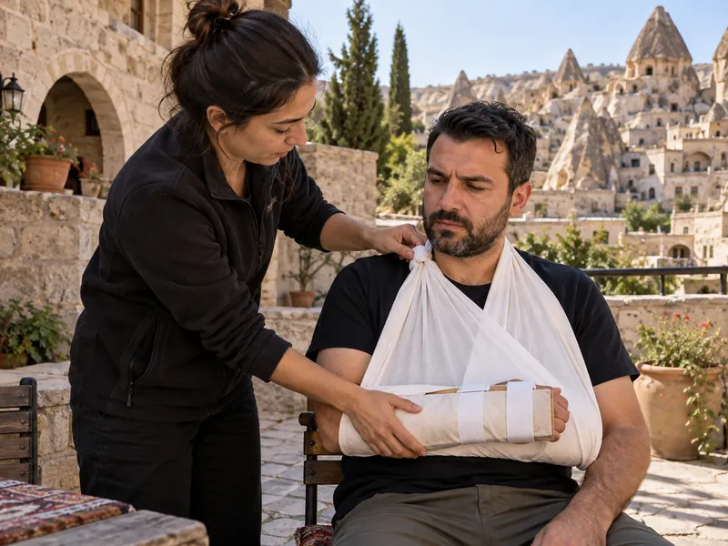

İlk YardımKonu 7 / 1047 çıkmış soru
Kırık, çıkık ve burkulmalar
Kırık, çıkık ve burkulmaların tanımını ve belirtilerini; atelle tespitin amacını ve kurallarını, bölgelere göre atel boylarını, kafatası, omurga, kaburga ve köprücük kemiği kırıklarında yapılacakları, çıkık ve burkulmada ilk yardımı kapsar.

1Konu anlatımı
Akılda kalsın
- Kırık, çıkık ve burkulmada temel hedef, sorunlu bölgeyi hareketsiz hâle getirerek kemik uçlarının çevre dokulara zarar vermesini ve durumun kötüleşmesini önlemektir.
- Atel, kırığın altındaki ve üstündeki eklemleri içine alacak uzunlukta olmalıdır: diz ile ayak arasındaki kırıkta dış atel topuktan kalçaya, uyluk kırığında topuktan koltuk altına uzanır.
- Omurga kırığında omuriliğin baskı altında kalması ya da zedelenmesi, yaralanma bölgesinin altında felce yol açabilir; yaralı oturtulmaz, baş-boyun-gövde ekseni korunur.
- Kaburga kırığı akciğere batabilir; göğse baskıda şiddetli ağrı, nefes darlığı ve öksürük görülür, yaralı oturuş veya yarı oturuş pozisyonunda sevk edilir.
- Köprücük kemiği kırığında atel uygulanmaz; kol askıya alınarak omuz tespit edilir ve yaralı oturur pozisyonda sevk edilir.
- Çıkık, hareketli eklemde eklem yüzeylerinin kalıcı olarak ayrılmasıdır; yerine oturtulmaya çalışılmaz, olduğu gibi sabitlenip sevk edilir.
- Burkulmada eklem sıkıştırıcı bandajla tespit edilir, soğuk uygulanır ve kalp seviyesinden yukarıda tutulur; sıcak uygulama ve turnike yapılmaz.
Kırık nedir?
Kırık, kemik bütünlüğünün bozulmasıdır. Kırığı oluşturan kuvvet çoğu zaman yalnızca kemiği kırmakla kalmaz; çevresindeki damarları, sinirleri, tendonları, kasları, deriyi ve komşu organları da yaralayabilir.
- Kapalı kırık: Kırık bölgenin üzerindeki deri sağlamdır.
- Açık kırık: Kırık bölgede yara vardır, kemik uçları dışarıdan görülebilir; kanama ve mikrop kapma riski daha yüksektir.
Belirtiler: kırık bölgede ağrı ve hassasiyet, şişlik, morarma, şekil bozukluğu, hareket kaybı ya da anormal hareket; açık kırıkta ayrıca yara ve kanama.
Kırıklarda ilk yardım
- Önce yaşam bulguları (ABC) değerlendirilir, kanama durdurulur ve 112 aranır.
- Kırık bölge, kırığın üstündeki ve altındaki eklemleri de içine alacak şekilde atelle hareketsiz hâle getirilir.
- Bozulmuş şekil düzeltilmeye çalışılmaz; açık kırıkta dışarı çıkan kemik içeri itilmez, yara temiz bir bezle örtülür.
- Yüzük, saat gibi eşyalar bölge şişmeden çıkarılır; tespitten sonra parmak uçlarında renk, ısı ve his kontrol edilir.
- Kırık bölgeye masaj, ovma ya da sıcak uygulama yapılmaz; kırık bölgeye yük bindirilmez.
Atel kuralları ve boyları
Atel tahta, karton, kalın dergi gibi sert malzemelerden yapılabilir; atel ile deri arasına yumuşak bir malzeme konur, sargı çok sıkı yapılmaz.
| Kırık bölgesi | Tespit şekli |
|---|---|
| Ön kol (dirsek ile el bileği arası) | Dirsekten parmak uçlarına uzanan atel; ardından kol askısı |
| Üst kol (pazı kemiği) | Omuzdan dirseğe uzanan atel; kol askısıyla gövdeye tespit |
| Diz ile ayak arası | Dış atel topuktan kalçaya, iç atel topuktan kasığa kadar |
| Diz ile kalça arası (uyluk) | Yaralı sırtüstü yatırılır; iç ve dış yanlardan atel konur: dış atel topuktan koltuk altına, iç atel topuktan kasığa kadar |
| Köprücük kemiği | Atel uygulanmaz; kol askısıyla omuz tespit edilir |
| Kaburga, kürek kemiği | Atel uygulanmaz; kol askısı ve sargıyla tespit edilir |
Özel bölgelerin kırıkları
Kafatası kırığı
Burun veya kulaktan kan ya da açık renkli sıvı gelmesi, göz çevresinde morarma ve bilinç bulanıklığı görülebilir. Kulak ve burundan gelen akıntı tıkanmaz; solunum yolu açık tutulur, baş-boyun-gövde ekseni korunarak sevk edilir.
Omurga kırığı
Omurga, içinden geçen omuriliği korur. Kırıkta omurilik baskı altında kalır ya da zedelenirse sinir iletimi kesilir ve yaralanma bölgesinin alt tarafında his kaybı, uyuşma ve geçici ya da kalıcı felç gelişebilir. Bu nedenle:
- Baş-boyun-gövde ekseni kesinlikle korunur; yaralı tek parça hâlinde hareket ettirilir.
- Yaralı oturtulmaz ve gereksiz yere hareket ettirilmez.
- Boyun yaralanması şüphesinde boyunluk takılır; yaralı sert bir sedyeyle taşınır.
Kaburga kırığı
Kaburgalar göğüs kafesini oluşturarak akciğerleri çevreler; kırık kaburga uçları akciğere batabilir. Göğse yapılan baskıda şiddetli ağrı, nefes almada güçlük ve öksürük görülür. Yaralı, solunumu kolaylaştırmak için oturuş veya yarı oturuş pozisyonunda sevk edilir.
Köprücük kemiği kırığı
Köprücük kemiği omuz kuşağının parçasıdır; kırığında omuz tespit edilir. Atel kullanılmaz; kol, dirsek bükülü olarak askıya alınır ve yaralı oturur pozisyonda sevk edilir.
Kalça ve uyluk kırığı
Oturmak ya da yarı oturmak kırık bölgeye yük bindirip kemik uçlarını oynatır; bu yaralılar sırtüstü ve hareketsiz şekilde taşınır.
Çıkık
Çıkık; zorlama, çarpma, düşme gibi darbeler sonucu oynar (hareketli) eklemi oluşturan kemik uçlarının birbirinden kalıcı olarak ayrılmasıdır. Omuz, dirsek, kalça, diz, ayak bileği gibi hareketli eklemlerde görülür.
Belirtiler: eklemde şiddetli ağrı (hareket ettirildiğinde azalmaz, artar), şekil bozukluğu, şişlik, morarma ve hareket kısıtlılığı.
İlk yardım: Eklem bulunduğu şekilde hareketsiz hâle getirilir ve yaralı sağlık kuruluşuna sevk edilir. Çıkık yerine oturtulmaya çalışılmaz; uzman olmayan kişilerin bu girişimi damar ve sinir sıkışmasına, eklem bağlarının kalıcı hasarına ve çıkığın sık tekrarlamasına yol açabilir.
Burkulma
Burkulma; hareketli eklemlerde ani bir zorlanmayla eklem yüzeylerinin anlık olarak ayrılıp yeniden yerine dönmesi, bu sırada eklem bağlarının zorlanıp zedelenmesidir. Ayak bileği, diz ve el bileğinde sık görülür; ağrı, şişlik ve morarma yapar.
- Eklem sıkıştırıcı (elastik) bir bandajla tespit edilip hareketsiz bırakılır.
- Şişlik ve ağrıyı azaltmak için öncelikle soğuk uygulama (beze sarılı buz) yapılır.
- Burkulan bölge kalp seviyesinden yukarıda tutulur.
- Sıcak uygulama, masaj ve turnike uygulanmaz; eklem zorlanmaz.
2Bu konunun soruları
MEB sınavlarında bu konudan çıkmış 47 soru (12 tanesi en az üç sınavda soruldu). Her soruda doğru cevabı ve açıklamasını hemen görürsünüz.
Hangi sorular?
Sıralama